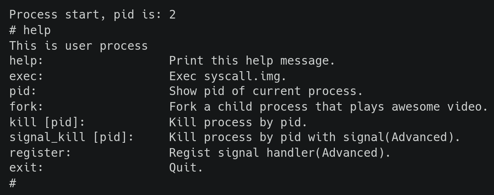

Warning
This document is currently under construction and may be incomplete or subject to significant changes. Please check back later for updates, and consult the instructor if you are unsure about any missing parts.
Lab 5: Thread and User Process#
Introduction#
Multitasking is the most important feature of an operating system. In this lab, you’ll learn how to create threads and how to switch between different threads to achieve multitasking. Moreover, you’ll learn how a user program becomes a user process and accesses services provided by the kernel through system calls.
Goals of this lab#
Understand how to create threads and user processes.
Understand how to implement scheduler and context switch.
Understand what’s preemption.
Understand how to implement POSIX signals.
Background#
Threads#
In the previous lab, you already learned how to implement multitasking with a single stack. However, in the case of single stack multitasking, the CPU thread can’t switch between two tasks at any time. Otherwise, a task may corrupt another task’s context stored on the stack.
As you know that the context of a CPU thread is determined by the values of its register set. Therefore, we can create different copies of register sets stored in the memory to represent different threads. When we want a CPU thread to run a specific thread, we let the CPU thread loads the corresponding register set in the memory to its registers. Then, from a macro point of view, there are multiple CPU threads running tasks independently at the same time. Moreover, these register sets can be loaded by any other CPU thread to achieve true parallelism.
Note
In this documentation, a thread means a software thread. For processing elements containing their hardware register sets are called CPU threads.
User Process#
When a user wants to run an application, the operating system loads the user program into memory and runs it with one or multiple threads. However, users want to run multiple programs or multiple copies of the same program. Moreover, they want each executing program to be isolated and has its identity, capabilities, and resource. To achieve this, the operating system maintains multiple isolated execution instances called processes. A process can only access the resource it owns. If it needs additional resources, it invokes the corresponding system calls. The kernel then checks the capabilities of the process and only provides the resource if the process has the access rights.
MMU-less#
In general, programs that directly run machine code on the CPU are isolated by virtual memory. However, we won’t enable the MMU in this lab, so we can’t prevent illegal memory access and we can’t use the same virtual address for different processes. If you want to execute multiple programs, please use different linker scripts for different programs and load them to different addresses to prevent overlapping. If your program calls fork, the program shouldn’t use global variables, dynamic allocation, indirect storage, etc, since the storage will be corrupted.
Run Queue and Wait Queue#
One CPU thread can run one thread at a time, but there may be multiple runnable threads at the same time. Those runnable threads are put in the run queue. When the current thread relinquishes control of the CPU thread, it calls the scheduler to pick the next thread. Then, a piece of code saves the CPU thread’s register set and loads the next thread’s register set.
During a thread’s execution, it may need to wait for a certain resource(e.g. a locked mutex or a non-ready IO device). Instead of busy waiting, a more efficient way is to yield the CPU thread so other threads can do meaningful jobs. Yet, yielding CPU is not enough because the thread may be scheduled again and waste CPU time. Therefore, when a thread needs to wait for a long time, it removes itself from the run queue, puts itself in a wait queue, and waits for others to wake it up.
In general, each resource has its own wait queue. When the resource is ready, one or many waiting threads in the wait queue will be put back to the run queue. The awakened thread is eventually scheduled and runs. Then, it can get the resource if the resource is still available.
Yield and Preemption#
As mentioned above, a thread can voluntarily yield the CPU thread to others. Yet, we can’t rely on a voluntary yield, because once a thread never yields, a high-priority thread can’t run even when it’s runnable. Hence, the kernel should be able to force the current thread to yield the CPU thread(i.e. preemption).
The implementation of preemption is simple. Once a thread relinquishes control of the CPU thread during its execution, there is a chance for another piece of code to call the scheduler and switch to another thread. For example, when a thread in kernel mode is interrupted, the control is handed over to the interrupt handler. Before returning to the original execution, the kernel can call the scheduler to do a context switch to achieve kernel preemption. When a user process takes exceptions(system calls, interrupts, etc.), the control is handed over to the exception handler. Before returning to the original execution, the kernel can call the scheduler to do a context switch to achieve user preemption.
The tricky part of preemption is the protection of critical sections because code executions are arbitrally interleaving now. Fortunately, user programs protect their critical sections themselves. Even the user program doesn’t protect the critical sections well, it’s the user program’s developer’s fault, and no one will blame the operating system. Also, it’s not possible to break other isolated processes. Therefore, the kernel developers don’t need to worry about problems caused by enabling user preemption.
On the contrary, there are multiple shared resources in the kernel. Meanwhile, a data race in the kernel can break the entire system. If the kernel’s developers need to enable fine-grained preemption in kernel mode, They need to be aware of all possible shared resource accesses and adopt the right methods to protect them, hence it’s more complex to enable kernel preemption.
Basic Exercises#
Warning
You won’t need to demonstrate the test component in Basic 1 and 2 if you can execute the test program successfully in Video Player.
Basic Exercise 1 - Thread - 10%#
In this part, you need to implement the creation, switch, and recycling of threads.
Creating a Thread#
Implement a thread-creating API. Users can pass a function(task) to the API, and the function is run in a newly created thread. To make the thread schedulable and runnable, you should create a data structure and a stack for it. Then, put it into the run queue.
The example API is listed below.
def foo():
pass
t = Thread(foo)
Scheduler and Context Switch#
Implement the schedule() API.
When the current thread calls this API, the scheduler picks the next thread from the run queue.
In this lab, your scheduler should at least be able to schedule the threads of the same priority in a round-robin manner.
After the next thread is picked, the kernel can save the current thread’s register set and load the next thread’s.
.global switch_to
switch_to:
sd ra, 0*8(a0)
sd sp, 1*8(a0)
sd s0, 2*8(a0)
sd s1, 3*8(a0)
sd s2, 4*8(a0)
sd s3, 5*8(a0)
sd s4, 6*8(a0)
sd s5, 7*8(a0)
sd s6, 8*8(a0)
sd s7, 9*8(a0)
sd s8, 10*8(a0)
sd s9, 11*8(a0)
sd s10,12*8(a0)
sd s11,13*8(a0)
ld ra, 0*8(a1)
ld sp, 1*8(a1)
ld s0, 2*8(a1)
ld s1, 3*8(a1)
ld s2, 4*8(a1)
ld s3, 5*8(a1)
ld s4, 6*8(a1)
ld s5, 7*8(a1)
ld s6, 8*8(a1)
ld s7, 9*8(a1)
ld s8, 10*8(a1)
ld s9, 11*8(a1)
ld s10,12*8(a1)
ld s11,13*8(a1)
csrw sscratch, a1
ret
.global get_current
get_current:
csrr a0, sscratch
ret
The above example gets the current thread’s data structure from the CSR register sscratch.
Then it passes the current thread and the next thread to the switch_to(prev, next) function.
Next, the CPU thread’s register set is saved on the current thread’s data structure,
and the next thread’s register set is loaded.
After switching the stack pointer and the sscratch register, the CPU thread is in the context of the next thread.
Note
You only need to save callee-saved registers, because other registers are already on the stack.
The Idle Thread#
The idle thread is a thread that is always runnable. When there are no other runnable threads, the scheduler should pick it to guarantee that the CPU thread always can fetch and execute the next instruction.
End of a Thread#
When a thread finishes its jobs, it needs to explicitly or implicitly call(return and let the caller call) exit()
to indicate it’s terminated.
In general, the thread can’t recycle all its resources. It’s because memory deallocation is a function call, and a thread shouldn’t free its stack while still using it. Therefore, the finished thread only removes itself from the run queue, releases freeable resources, sets its state to be dead, and waits for someone to recycle the remaining stuff.
In UNIX-like operating systems, the parent thread is accountable for recycling its zombie child. The parent can also get the status code from the zombie child’s data structure as useful information. In this lab, you can let the idle thread do the jobs to simplify the implementation. When the idle thread is scheduled, it checks if there is any zombie thread. If yes, it recycles them as follows.
def idle():
while True:
kill_zombies() # reclaim threads marked as DEAD
schedule() # switch to any other runnable thread
Test#
Please test your implementation with the following code or equivalent logic code in the demo.
Expected result: multiple threads print the content interleaved.
void foo(){
for(int i = 0; i < 10; ++i) {
printf("Thread id: %d %d\n", current_thread().id(), i);
delay(1000000);
schedule();
}
}
void kernel_main() {
// ...
// boot setup
// ...
for(int i = 0; i < N; ++i) { // N should > 2
thread_create(foo);
}
idle();
}
Todo
Implement the thread mechanism.
Basic Exercise 2 - User Process and System Call - 30%#
In this part, you need to implement the basic user process mechanism such as system calls and user preemption.
Trap Frame#
The registers are saved at the top of the kernel stack when a user process throws an exception and enters kernel mode. The registers are loaded before returning to user mode. The trap frame is the name given to the saved material. The kernel will not affect the trap frame in normal exception handling (e.g., page fault, interrupt), so the user process will not be aware that it has entered kernel mode. When it comes to system calls, however, the user software expects the kernel to take care of it. The program uses the general-purpose registers to set the arguments and receive the return value, just like conventional function calls. The kernel can then read the trap frame to acquire the user’s parameters and write it to set the return value and error code.
System Calls#
In the previous lab, the ecall instruction allowed your user program to trap to the kernel. In this lab, you’ll learn how arguments and return values are transmitted between user and kernel modes. In order to develop simple user programs, you’ll also need to implement some fundamental system calls.
Required System Calls#
You need to implement the following system calls for user programs.
- int getpid()
Get current process’s id.
- size_t uart_read(char buf[], size_t size)
Return the number of bytes read by reading size byte into the user-supplied buffer buf.
- size_t uart_write(const char buf[], size_t size)
Return the number of bytes written after writing size byte from the user-supplied buffer buf.
- int exec(const char* name, char *const argv[])
Run the program with parameters.
Note
In this lab, you won’t have to deal with argument passing, but you can still use it.
- int fork()
The standard method of duplicating the current process in UNIX-like operating systems is to use fork(). Following the call to fork(), two processes run the same code. Set the parent process’s return value to the child’s id and the child process’s return value to 0 to distinguish them.
- void exit()
Terminate the current process.
- int mbox_call(unsigned char ch, unsigned int *mbox)
Get the hardware’s information by mailbox
- void kill(int pid)
Other processes identified by pid should be terminated.
Note
You don’t need to implement this system call if you prefer to kill a process using the POSIX Signal stated in Advanced Exercise 1.
Warning
To execute the test program in Video Player, make sure your system calls match the guidelines below.
System Call Format in Video Player’s Test Program#
The ecall function will be used to make a system call.
- When calling the ecall function
The arguments would be stored in a0, a1, a2, …
Return value would be stored in a0
- The system call numbers given below would be stored in a7
0: int getpid()
1: size_t uartread(char buf[], size_t size)
2: size_t uartwrite(const char buf[], size_t size)
3: int exec(const char *name, char *const argv[])
4: int fork()
5: void exit(int status)
6: int mbox_call(unsigned char ch, unsigned int *mbox)
7: void kill(int pid)
Kernel Preemption#
It’s worth noting that you can only disable preemption or interrupts when absolutely essential. Your kernel should always be preemptible at other times.
Test#
Warning
Please test your implementation using the code below or equivalent logic code, but you must output the stack pointer. This test should work in user mode.
void fork_test(){
printf("\nFork Test, pid %d\n", get_pid());
int cnt = 1;
int ret = 0;
if ((ret = fork()) == 0) { // child
long long cur_sp;
asm volatile("mv %0, sp" : "=r"(cur_sp));
printf("first child pid: %d, cnt: %d, ptr: %x, sp : %x\n", get_pid(), cnt, &cnt, cur_sp);
++cnt;
if ((ret = fork()) != 0){
asm volatile("mv %0, sp" : "=r"(cur_sp));
printf("first child pid: %d, cnt: %d, ptr: %x, sp : %x\n", get_pid(), cnt, &cnt, cur_sp);
}
else{
while (cnt < 5) {
asm volatile("mv %0, sp" : "=r"(cur_sp));
printf("second child pid: %d, cnt: %d, ptr: %x, sp : %x\n", get_pid(), cnt, &cnt, cur_sp);
delay(1000000);
++cnt;
}
}
exit();
}
else {
printf("parent here, pid %d, child %d\n", get_pid(), ret);
}
}
Video Player - 40%#
In order to test the correctness of your previous implementation, we create a user program that runs only if your kernel behaves as expected.
Timer#
Enable the timer interrupt. Schedule the pending threads when the timer interrupts.
Note
Set the expired time appropriately according to the mtime and mtimecmp registers in the VF2 system.
User Program#
Load the user program to your kernel and execute it. The system call you defined above would be used by the user program.
This test program will access the timer registers, so make sure your timer initialization includes code to enable reading and writing mtime and mtimecmp.
*(volatile unsigned int*)(CLINT_BASE + 0x4000) = next_expired_time;
Important
Obviously, the user program should run in user mode (U-mode).
Note
The user application requires a display output. If you’re using QEMU, ensure the framebuffer is enabled. On physical VisionFive 2 hardware, connect the HDMI output to a monitor.
If everything goes well, you’ll enter a shell generated by the user program and you could type fork to start a child thread.
A snapshot of the user program:
Todo
You should be able to switch back and forth between shell and the child thread every time the timer interrupts, enabling you to type commands while the child thread continues to perform its work.
Warning
Only if you can run our test program fluently will you receive all the points; otherwise, even though you implemented the system call correctly, you will receive no points in this section.
Advanced Exercises#
Advanced Exercise 1 - POSIX Signal - 30%#
The POSIX signal is an asynchronous method of inter-process communication. When a user process gets a signal, it calls a default or registered signal handler.
Implementation#
One alternative method is for the kernel to check for outstanding signals before returning the process to user mode. If the answer is yes, the kernel executes the appropriate handler.
The default signal handlers can be finished in kernel mode. The registered signal handlers, on the other hand, should be run in user mode. Furthermore, while performing the handler, the user process may enter kernel mode again owing to another system call or interrupt. As a result, before running the handler, you should save the original context. When the handler completes, the kernel restores the context so that the original execution can proceed.
The process is still in user mode after the handler finishes and returns. The kernel can set the handler’s return address(ra) to a chunk of code containing the sigreturn() system call to force it into kernel mode and indicate that it has already completed. Following that, the kernel recognizes that the handler is complete and restores the prior context.
Finally, during execution, the handler requires a user stack. The kernel should allocate a new stack for the handler and then recycle it after it completes. It’s also possible for the kernel to attach the process’s prior user context and sigreturn() to it.
Note
The case of nested registered signal handlers does not need to be handled.
Todo
Implement POSIX signal.
Warning
Your user-registered handler must be in user mode.
Our test program could also apply to your POSIX signal implementation. You should test your implementation in this part with our user program, if your signal handler can only work in your own testcase, you will only receive at most half of the points of this part.
You should copy the user-registered handler when program calls fork
To meet our standards, please follow the guidelines below : In order to let a process send transmit signals to any other process, you must implement the kill(pid, signal) system call. Meanwhile, you must implement the SIGKILL default signal handler (terminate the process). The signal(signal, handler) system call must then be implemented so that a user program can register its function as the signal’s handler.
- signal(int SIGNAL, void (*handler)())
system call number: 8
- kill(int pid, int SIGNAL)
system call number: 9
SIGKILL = 9
You can simply type register in shell to register a handler provided by us while running our test program. Similarly, you can use the command signal_kill {tid} to indicate which thread you want to terminate.